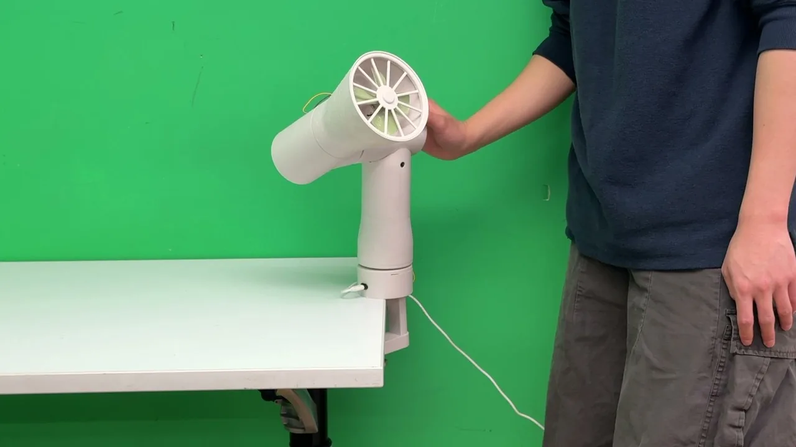
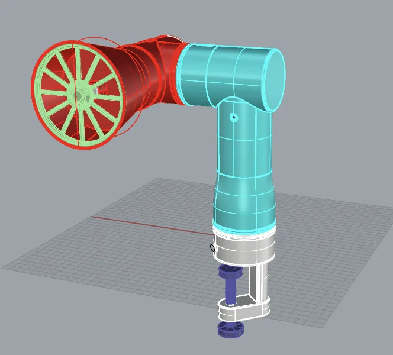
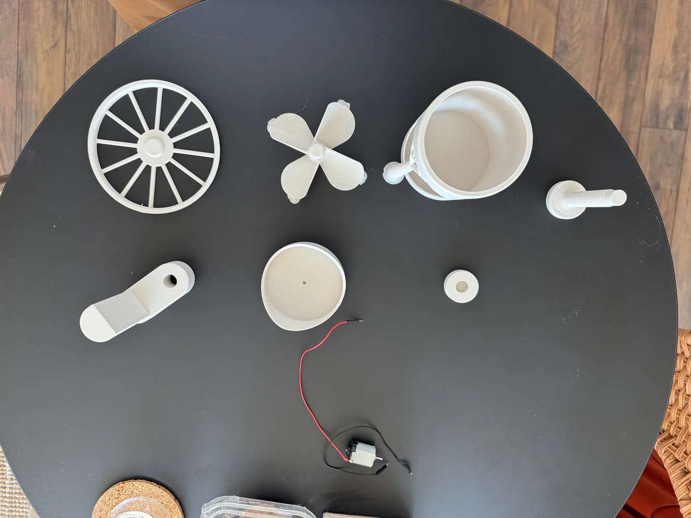
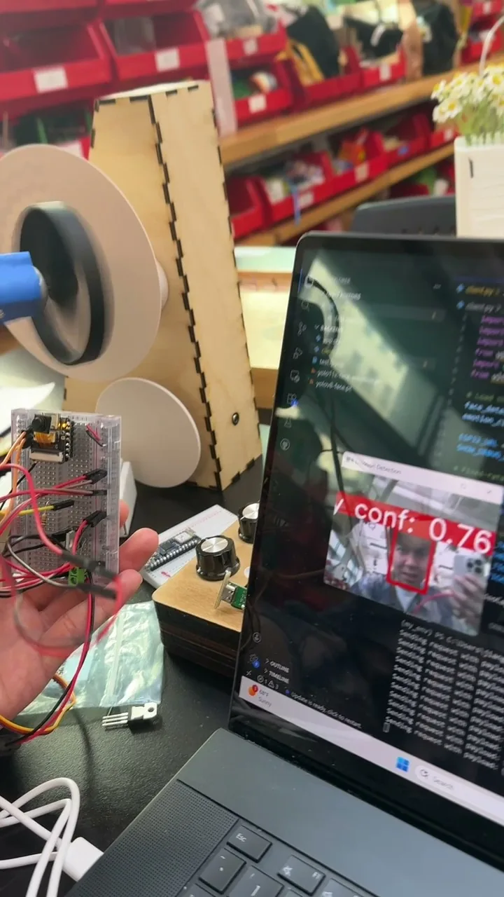
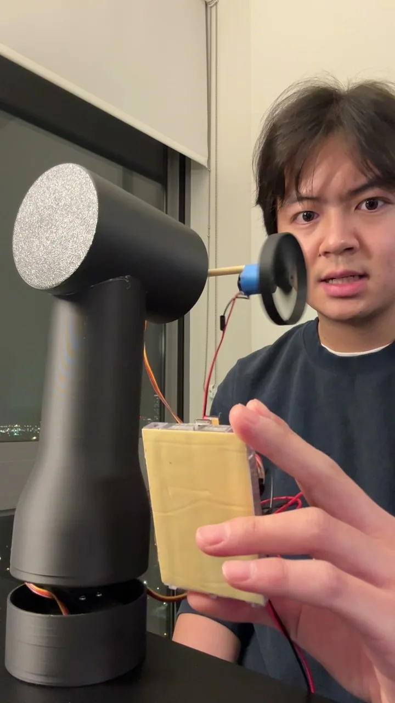
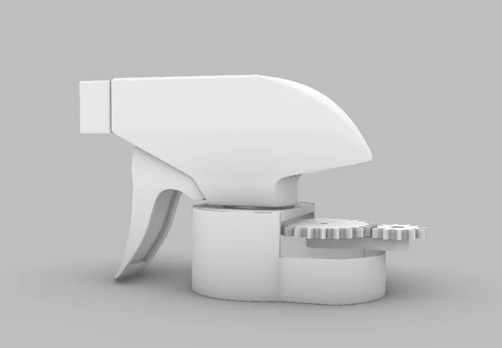
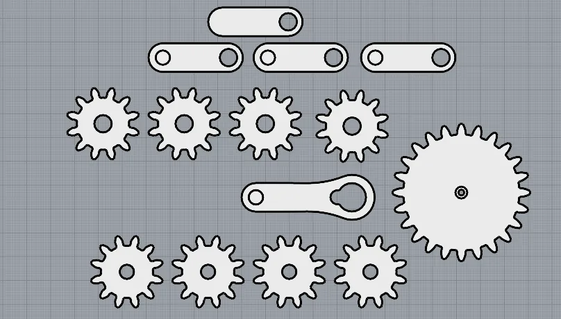
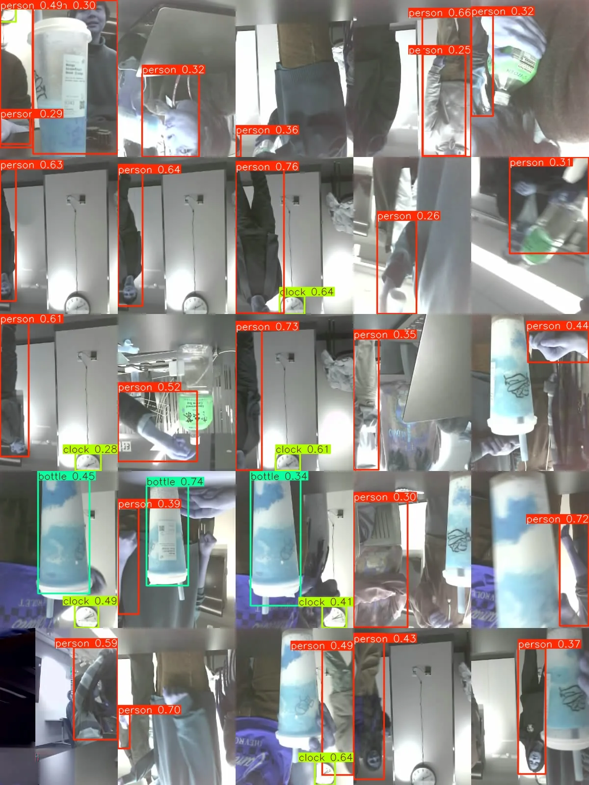

The Fan
A fan that moves by itself. When finding someone is angry, it will follow the person and blow wind toward the person.
- 3D modeling: Rhino
- Hardware: XiaoESP32, 2 Servo motors (2 joints), 1 DC motor
- Backend: Python, FlaskAPI, OpenCV, YOLO

To keep the device compact, we selected a Xiao ESP32 with an integrated camera module. Unlike our previous prototype, which was limited by available GPIO pins, this configuration supported both computer vision and control of multiple actuators within a small form factor.
We also designed the system architecture in a way, rather than having the microcontroller send images for processing and wait for a response, the ESP32 served a live video stream while a laptop client handled computer vision and behavior updates. This event-driven approach reduced latency, enabled continuous operation, and simplified deployment by providing a stable network endpoint.
The system uses open-source YOLO-based models for face and emotion detection, enabling real-time interaction based on audience expressions. During testing, we observed that model performance degraded for rotated or non-frontal faces, reflecting biases in the training data. This limitation informed both our evaluation process and future directions for improving robustness in real-world environments.




The Tail
A sprinkle head that wants a body. It will move its tail when seeing someone, and move its tail eagerly when seeing a bottle.
- 3D modeling: Rhino
- Hardware: ESP32-CAM, Servo Motor
- Backend: Python, FlaskAPI, SmolVLM, YOLO


